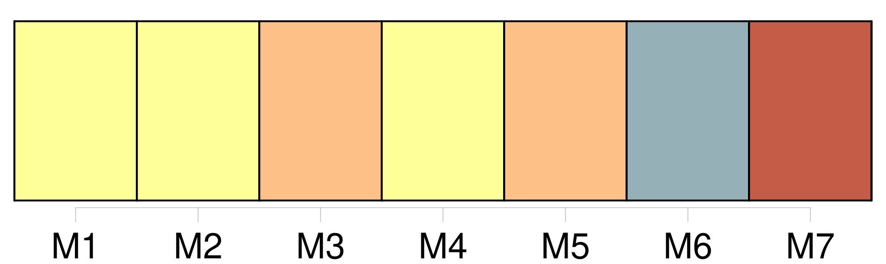
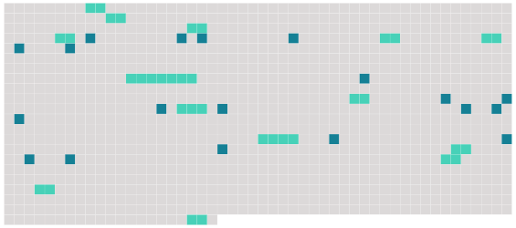

Longueur nb maillons : 33 mentions |
  |
» [2 phrases]
Il leva et palpa, l'une après l'autre, les quatre jambes de [la bête] , tâta le cou, les côtes, les jarrets, éprouva du doigt les reins, ouvrit la bouche, examina les dents, déclara son âge, et, comme toute la famille descendait, il fit une sorte de petit cours théorique et pratique sur le cheval en général et en particulier sur [celui -là] , qu'il reconnaissait excellent.
Quand tout le monde fut bien placé dans la voiture, il vérifia les sangles de la selle ; puis, s'enlevant sur un étrier, retomba sur [l'animal] , [qui] se mit à danser sous la charge et [faillit] désarçonner [son] cavalier.
Hector, ému, tâchait de [le] calmer :
» [9 phrases] [Le cheval, effrayé par ces clameurs] , finit par prendre le galop, et, pendant que le cavalier s'efforçait de [l'] arrêter, le chapeau roula par terre. [2 phrases]
Bien que le cocher prît soin des trois chevaux, Hector à tout moment se levait pour aller voir si [le sien] ne manquait de rien ; et il [le] caressait sur le cou, [lui] faisant manger du pain, des gâteaux, du sucre.
Il déclara : [Il] m'a même un peu secoué dans les premiers moments ; mais tu as vu que je m'y suis vite remis : [il] a reconnu [son] maître, [il] ne bougera plus maintenant. [6 phrases]
[Le cheval d'Hector] , dès qu' [il] eut dépassé l'Arc de Triomphe, fut saisi soudain d'une ardeur nouvelle, et [il] filait à travers les roues, au grand trot, vers l'écurie, malgré toutes les tentatives d'apaisement de [son] cavalier.
La voiture était loin maintenant, loin derrière ; et voilà qu'en face du Palais de l'Industrie, [l'animal] , se voyant du champ, [tourna] à droite et [prit] le galop. [1 phrases]
Impuissant à maîtriser [sa bête] , il se mit à crier de toute sa force : [6 phrases]
» [8 phrases] Un troisième tenait [son cheval] |
 |
La ressource peut être téléchargée sur la page Ortolang
Si vous avez des questions ou vous voyez des erreurs, merci d'envoyer un mail à silvia.federzoni89@gmail.com
Site développé par S. Federzoni (contact)